Examples#
This gallery walks through blockchainkit.network, one experiment per
breakthrough on the network history page: discrete-event simulation and logical
clocks, epidemic gossip and reliable broadcast, random, small-world and
scale-free peer graphs, Kademlia with its Sybil and eclipse attacks, block
relay and forks, transaction privacy, and the CAP trade-off.
Each script is self-contained and runs with
python examples/network/<section>/<script>.py.
Simulated and logical time#
An event queue in place of a wall clock, and the clocks peers can build from their messages alone.
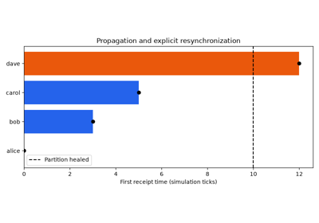
Discrete-event simulation: a network on an event queue (GPSS 1961, Simula 1965)
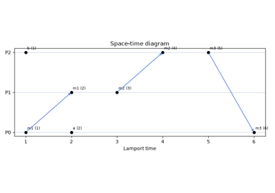
Lamport clocks: ordering events without a shared clock (Lamport 1978)
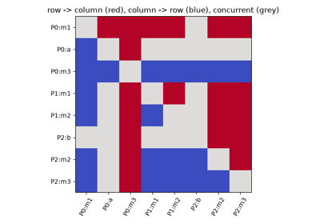
Vector clocks: detecting concurrency (Fidge and Mattern 1988)
Gossip and broadcast#
Epidemic dissemination, how many rounds a rumor needs, and broadcast that survives a lying sender.
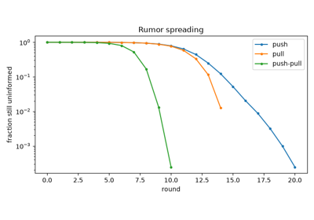
Epidemic algorithms: push, pull and push-pull (Demers et al. 1987)
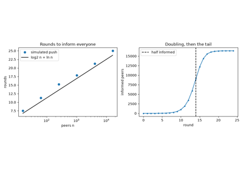
Rumor spreading in log2 n + ln n rounds (Frieze and Grimmett 1985, Pittel 1987)
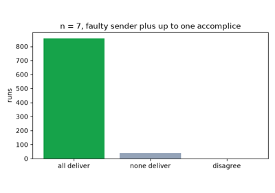
Byzantine reliable broadcast: echo, then ready (Bracha 1987)
Peer graphs#
Random, small-world, and scale-free topologies, and what each means for a peer-to-peer network.
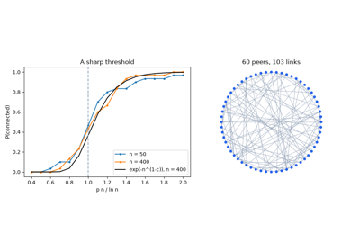
Random graphs and the connectivity threshold (Erdős and Rényi 1959)
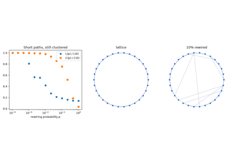
Small-world networks: a few shortcuts (Watts and Strogatz 1998)
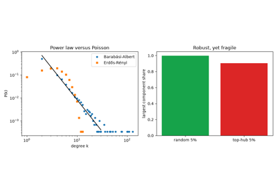
Scale-free networks: preferential attachment (Barabási and Albert 1999)
Overlays and their attacks#
Kademlia routing, and the Sybil and eclipse attacks on who a peer talks to.
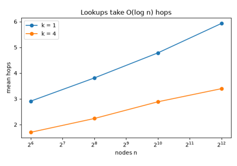
Kademlia: routing by XOR distance (Maymounkov and Mazières 2002)
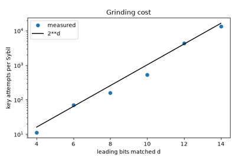
The Sybil attack: identities are cheap (Douceur 2002)
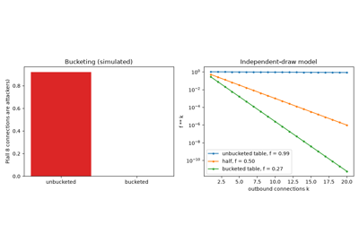
Eclipse attacks on Bitcoin’s peer table (Heilman et al. 2015)
Block and transaction relay#
Announcing instead of flooding, why propagation delay causes forks, compact blocks, and hiding where a transaction came from.
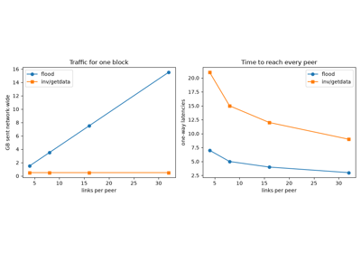
Announce, then fetch: Bitcoin’s inv/getdata relay (Nakamoto 2009)
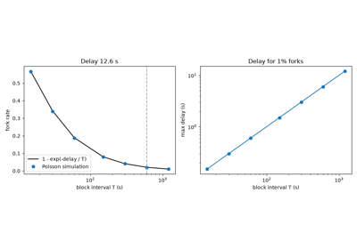
Propagation delay causes forks (Decker and Wattenhofer 2013)
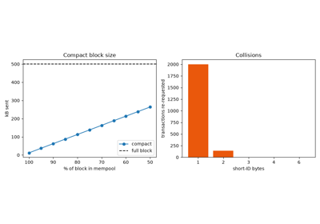
Compact blocks: send what the peer lacks (Corallo, BIP 152, 2016)
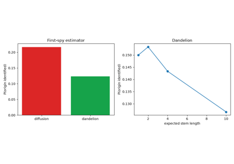
Dandelion: hiding where a transaction came from (Bojja Venkatakrishnan et al. 2017)
Replication under partitions#
The CAP trade-off on a replicated register.
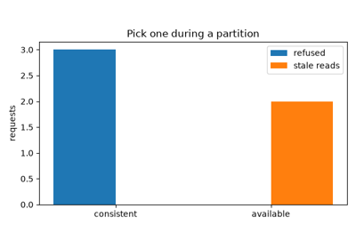
The CAP theorem: consistency or availability (Brewer 2000, Gilbert and Lynch 2002)